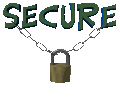
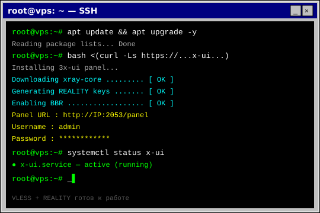

|
 AMNEZIAWG СЕРВЕР★彡 SELF-HOSTED СТЕЛС-VPN 2026 彡★
Как поднять собственный сервер AmneziaWG 2.0 через приложение AmneziaVPN — обфускация под обычный UDP-трафик, обход DPI и ТСПУ в один клик 
 ЧТО ТАКОЕ AMNEZIAWG СЕРВЕР
ЧТО ТАКОЕ AMNEZIAWG СЕРВЕР
AmneziaWG — форк WireGuard со встроенной маскировкой трафика. В отличие от голого WireGuard (который DPI ловит за секунды), AmneziaWG 2.0 использует динамические заголовки, случайный padding и имитацию настоящих UDP-протоколов. Главная фишка: приложение AmneziaVPN ставит и настраивает сервер на твоём VPS почти в один клик — не нужно вручную ковыряться в конфигах. 
 ПОШАГОВАЯ ИНСТРУКЦИЯ
ПОШАГОВАЯ ИНСТРУКЦИЯ
1 Арендуй чистый VPS вне РФ Нужен пустой VPS с Ubuntu 22.04 / Debian 12, root-доступ по SSH. Минимум 1 ГБ RAM. Локация — Европа или соседние страны.
2 Установи приложение AmneziaVPN Скачай AmneziaVPN на компьютер (Windows/Mac/Linux) с сайта amnezia.org или GitHub. Именно десктоп-версия умеет настраивать сервер.
3 Подключи свой сервер в приложении В AmneziaVPN нажми «Добавить сервер» → введи IP, логин root и пароль/SSH-ключ. Приложение подключится по SSH. # в приложении вводишь: IP: ТВОЙ_IP Логин: root Пароль: ТВОЙ_ПАРОЛЬ  4 Выбери протокол AmneziaWG 2.0 Приложение предложит протоколы. Выбери AmneziaWG (версия 2.0 — с улучшенной обфускацией). Оно само установит и настроит сервер за пару минут.
5 Подключись и раздай конфиг После установки жми «Подключиться». Для телефона — экспортируй конфигурацию (файл/QR/ссылку vpn://) и импортируй в мобильное приложение AmneziaVPN.

ЧАСТЫЕ ВОПРОСЫ

Свой сервер — это VPS за деньги каждый месяц, обновления, починка после блокировок и возня с конфигами. Если нужен просто рабочий интернет без головной боли — возьми готовое: Промокод VNESPISKA = −20% ★ дешевле, чем платить за VPS 
|